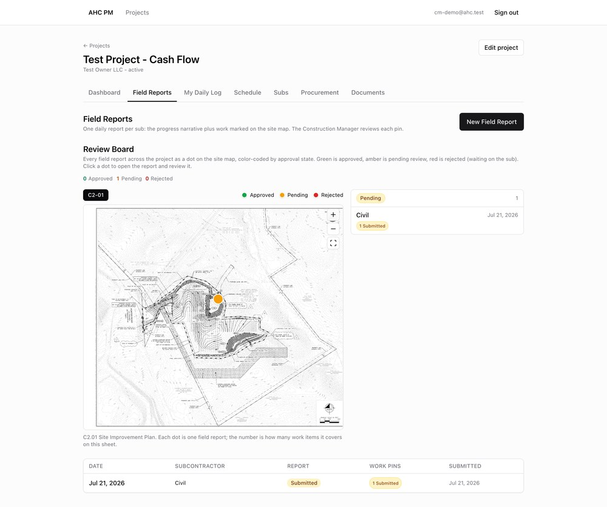
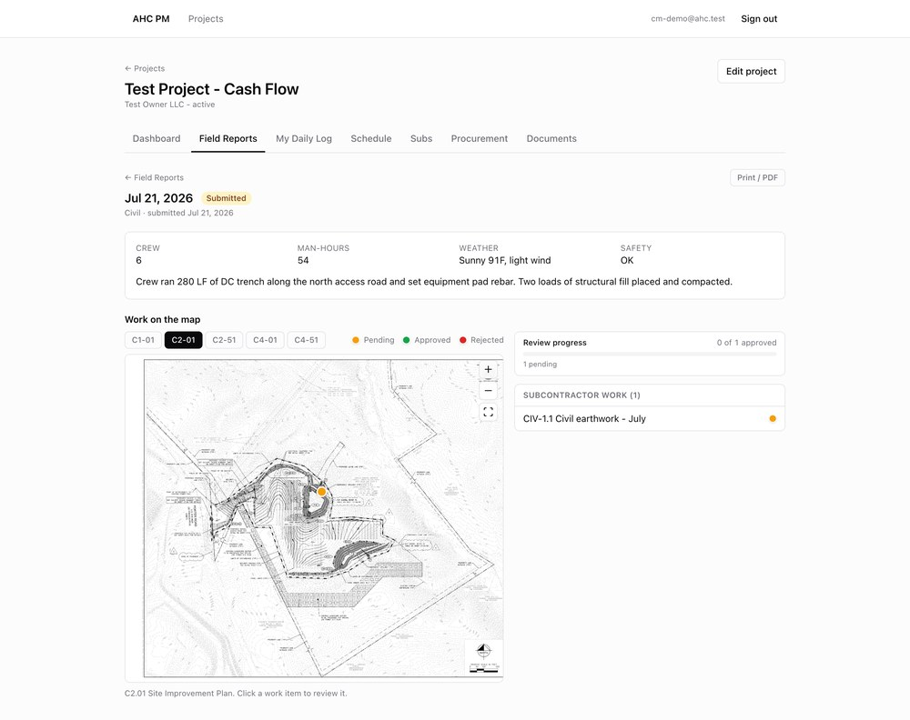
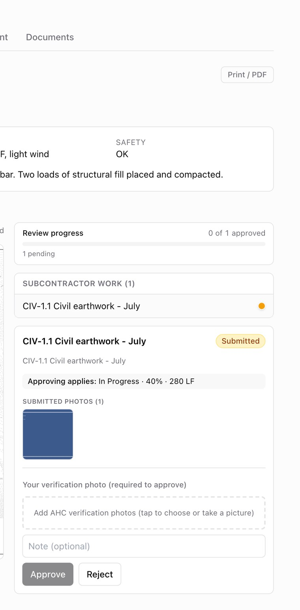
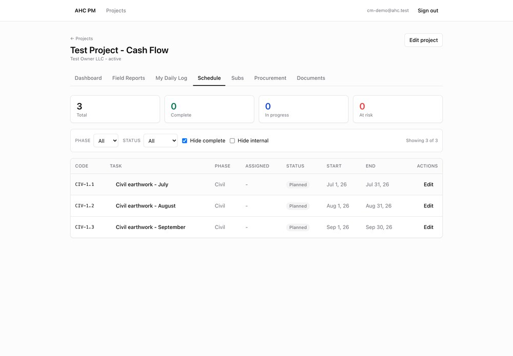
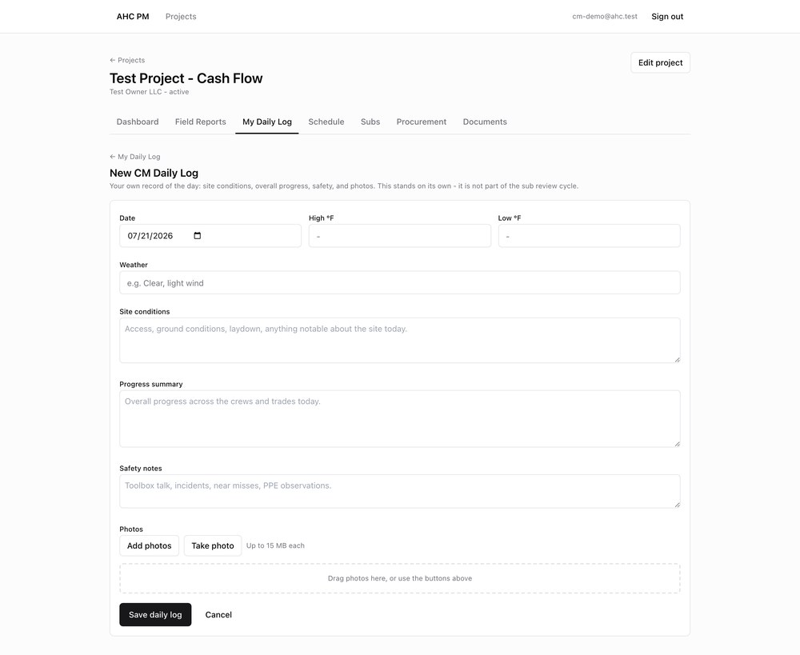

Thanks for helping us test the QC review side of our project platform. For the next three days, play the Construction Manager: subcontractors file daily field reports, and your job is to review each piece of work, verify it with your own photo, and approve or reject it. Approved work drives the project schedule. You also file your own CM daily log. We want to know anything that is confusing, wrong, or slower than it should be.
https://pm-platform-nine.vercel.appcm-demo@ahc.testCMdemo2026!On the sign-in screen, click "Sign in with a password instead." There are already a couple of submitted example reports waiting, so you can start reviewing on day 1. Please change the password after the test.
Subs file reports; each report has one or more pins on the site plan. You open each pin, check the sub's photo and reported progress, add your own verification photo, and approve or reject. Here is the full walk-through.
Log in, open Test Project - Cash Flow, and go to the Field Reports tab. As the CM you get a Review Board: every report plotted on the site plan as a colored dot, plus a queue on the right.
Green = approved Amber = pending your review Red = rejected (back with the sub)

Click a report. You will see the crew, man-hours, weather, safety flag, the work narrative, and every pin on the plan. Pending pins are amber. Click a work item in the Subcontractor work list to review it.

The panel shows exactly what approving will do - "Approving applies: In Progress · 40% · 280 LF" - plus the sub's submitted photo.
You must attach your own AHC verification photo before Approve turns on. This is intentional: no approval without your own proof. Add an optional note, then Approve.
To send work back, click Reject and give a reason. It returns to the sub as Rejected and does not move the schedule.

Open the Schedule tab and find the task you just approved. Its % complete and installed quantity should now match the approved report, sourced from the field report.

Go to My Daily Log then New CM Daily Log. Record weather, site conditions, progress, safety, and optional photos. This is your independent record - it is separate from the sub review cycle.

Review whatever the subs file, and deliberately exercise the tricky progress cases below. If the sub has not filed yet on a given day, review the pre-loaded example reports and ping them.
| Day | What to do | What we are checking |
|---|---|---|
| Day 1 Jul 21 |
Review a pending report end-to-end: approve one pin (with a verification photo) and reject a second pin with a reason. Confirm the approved value shows on the Schedule and the rejected one does not. | The core approve / reject loop works and the verification-photo gate holds. |
| Day 2 Jul 22 |
File your own CM daily log. Approve a report that includes equipment / deliveries / delays and confirm they read clearly. Open a report flagged with a safety incident or near miss - is it obvious on the board and in the report? | Supporting sections and safety flags are clear and reviewable. |
| Day 3 Jul 23 |
Run the progress-integrity checks in the box below. Use Print / PDF on a finished report. Skim the whole Review Board - do the dot colors and counts match reality? | The schedule always reflects the latest approved truth, and reporting/export works. |
These are the cases that matter most. The schedule must always hold the latest-dated approved value.
For each issue, capture enough that we can reproduce it. A screenshot helps a lot.
| # | Date / time | Report (date + sub) | What you did | What you expected | What actually happened |
|---|---|---|---|---|---|
| 1 | |||||
| 2 | |||||
| 3 | |||||
| 4 | |||||
| 5 |
On a Mac, Shift+Cmd+4 grabs a screenshot. Send your notes and screenshots to Phil at the end of each day.